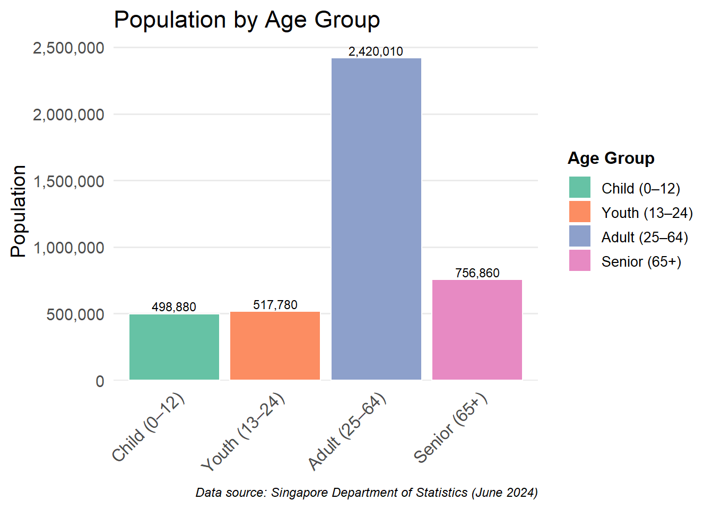

pacman::p_load(tidyverse,dplyr,
ggplot2, forcats,
scales,patchwork)Take-home Exercise 01 phase 2
Overview Task
In this exercise, we select a peer submission of Take-home Exercise 1.
Critic good design principles
Recommendations for further improvement
Present a makeover version of the data
Getting started
Load required packages
Import data
The data used in this exercise is the same as the data used in the Take-home Exercise 1
population_age_sex_2024 <- read_csv("respopagesex2024/respopagesex2024.csv")
population_age_sex_2024# A tibble: 60,424 × 6
PA SZ Age Sex Pop Time
<chr> <chr> <chr> <chr> <dbl> <dbl>
1 Ang Mo Kio Ang Mo Kio Town Centre 0 Males 10 2024
2 Ang Mo Kio Ang Mo Kio Town Centre 0 Females 10 2024
3 Ang Mo Kio Ang Mo Kio Town Centre 1 Males 10 2024
4 Ang Mo Kio Ang Mo Kio Town Centre 1 Females 10 2024
5 Ang Mo Kio Ang Mo Kio Town Centre 2 Males 10 2024
6 Ang Mo Kio Ang Mo Kio Town Centre 2 Females 10 2024
7 Ang Mo Kio Ang Mo Kio Town Centre 3 Males 10 2024
8 Ang Mo Kio Ang Mo Kio Town Centre 3 Females 10 2024
9 Ang Mo Kio Ang Mo Kio Town Centre 4 Males 30 2024
10 Ang Mo Kio Ang Mo Kio Town Centre 4 Females 10 2024
# ℹ 60,414 more rowsData Processing
str(population_age_sex_2024)spc_tbl_ [60,424 × 6] (S3: spec_tbl_df/tbl_df/tbl/data.frame)
$ PA : chr [1:60424] "Ang Mo Kio" "Ang Mo Kio" "Ang Mo Kio" "Ang Mo Kio" ...
$ SZ : chr [1:60424] "Ang Mo Kio Town Centre" "Ang Mo Kio Town Centre" "Ang Mo Kio Town Centre" "Ang Mo Kio Town Centre" ...
$ Age : chr [1:60424] "0" "0" "1" "1" ...
$ Sex : chr [1:60424] "Males" "Females" "Males" "Females" ...
$ Pop : num [1:60424] 10 10 10 10 10 10 10 10 30 10 ...
$ Time: num [1:60424] 2024 2024 2024 2024 2024 ...
- attr(*, "spec")=
.. cols(
.. PA = col_character(),
.. SZ = col_character(),
.. Age = col_character(),
.. Sex = col_character(),
.. Pop = col_double(),
.. Time = col_double()
.. )
- attr(*, "problems")=<externalptr> sort(unique(population_age_sex_2024$Age)) [1] "0" "1" "10" "11" "12"
[6] "13" "14" "15" "16" "17"
[11] "18" "19" "2" "20" "21"
[16] "22" "23" "24" "25" "26"
[21] "27" "28" "29" "3" "30"
[26] "31" "32" "33" "34" "35"
[31] "36" "37" "38" "39" "4"
[36] "40" "41" "42" "43" "44"
[41] "45" "46" "47" "48" "49"
[46] "5" "50" "51" "52" "53"
[51] "54" "55" "56" "57" "58"
[56] "59" "6" "60" "61" "62"
[61] "63" "64" "65" "66" "67"
[66] "68" "69" "7" "70" "71"
[71] "72" "73" "74" "75" "76"
[76] "77" "78" "79" "8" "80"
[81] "81" "82" "83" "84" "85"
[86] "86" "87" "88" "89" "9"
[91] "90_and_Over"Creating a Numeric Age Column
df <- population_age_sex_2024 %>%
mutate(
AgeNum = suppressWarnings(
ifelse(Age == "90_and_Over", 90, as.numeric(Age))
)
)Creating Age Grouping
df <- df %>%
mutate(
AgeGroup = case_when(
AgeNum <= 12 ~ "Child",
AgeNum <= 24 ~ "Youth",
AgeNum <= 64 ~ "Adult",
TRUE ~ "Senior"
)
)Visualization: Population by Age / Age Group
Original Design
This visualization shows two charts for Singapore’s resident population (2024):
Total Population by Age – population by single-age bar chart
Population by Age Group – a 4-category bar chart (Child, Youth, Adult, Senior)
The original design is shown below.
Critique for Population by Age / Age Group
Remake
library(tidyverse)
library(scales)
bin_labels <- c(paste0(seq(0, 85, by = 5), "-", seq(4, 89, by = 5)), "90+")
pop_5yr <- df %>%
mutate(
AgeNum = suppressWarnings(
ifelse(Age %in% c("90_and_over","90_and_above"), 90, as.numeric(Age))
),
AgeBin = cut(
AgeNum,
breaks = c(seq(0, 90, by = 5), Inf),
labels = bin_labels,
right = FALSE
)
) %>%
replace_na(list(AgeBin = "90+")) %>%
group_by(AgeBin) %>%
summarise(Pop = sum(Pop, na.rm = TRUE), .groups = "drop") %>%
mutate(AgeBin = factor(AgeBin, levels = bin_labels))
ggplot(pop_5yr, aes(x = AgeBin, y = Pop)) +
geom_col(fill = "#28D6D7", color = "white") +
geom_text(
aes(label = comma(Pop)),
vjust = -0.3,
size = 5,
color = "#D72928"
) +
scale_y_continuous(
breaks = seq(0, 350000, 50000),
limits = c(0, 440000),
labels = comma,
expand = expansion(add = c(0, 0))
) +
labs(
title = "Singapore Resident Population (Y2024)",
x = "Age",
y = "Population"
) +
theme_minimal(base_size = 25) +
theme(
axis.text.x = element_text(angle = 45, hjust = 1),
panel.grid.major.x = element_blank(),
panel.grid.minor = element_blank()
)
library(tidyverse)
library(RColorBrewer)
library(scales)
df2 <- df %>%
mutate(
AgeNum = suppressWarnings(
ifelse(Age %in% c("90_and_over","90_and_above"),
90,
as.numeric(Age))
)
) %>%
mutate(
AgeGroup = case_when(
AgeNum <= 12 ~ "Child (0–12)",
AgeNum <= 24 ~ "Youth (13–24)",
AgeNum <= 64 ~ "Adult (25–64)",
TRUE ~ "Senior (65+)"
),
AgeGroup = factor(
AgeGroup,
levels = c("Child (0–12)",
"Youth (13–24)",
"Adult (25–64)",
"Senior (65+)")
)
)
p2_new <- df2 %>%
group_by(AgeGroup) %>%
summarise(Pop = sum(Pop, na.rm = TRUE), .groups = "drop") %>%
ggplot(aes(x = AgeGroup, y = Pop, fill = AgeGroup)) +
geom_col(color = "white") +
geom_text(aes(label = comma(Pop)), vjust = -0.3, size = 3) +
scale_y_continuous(labels = comma, expand = expansion(mult = c(0, .05))) +
scale_fill_brewer(palette = "Set2", name = "Age Group") +
labs(
title = "Population by Age Group",
x = NULL,
y = "Population",
caption = "Data source: Singapore Department of Statistics (June 2024)"
) +
theme_minimal(base_size = 14) +
theme(
legend.position = "right",
legend.title = element_text(size = 12, face = "bold"),
legend.text = element_text(size = 10),
axis.text.x = element_text(angle = 45, hjust = 1, size = 12),
panel.grid.major.x = element_blank(),
panel.grid.minor = element_blank(),
plot.caption = element_text(size = 9, hjust = 1, face = "italic")
)
print(p2_new)Summary and conclusion
By grouping ages into 5-year bins and enriching the labels, we transformed a busy histogram and a loosely ordered bar chart into concise, self-contained visuals. These redesigned plots not only improve readability and accessibility but also make the demographic story of Singapore—its strong working-age base, shrinking youth cohorts, and emerging aging population—more transparent for policymakers and stakeholders.
Reference
https://cabbage-wonderland.netlify.app/takehome_ex/takehome_ex01/takehome_ex01#overview